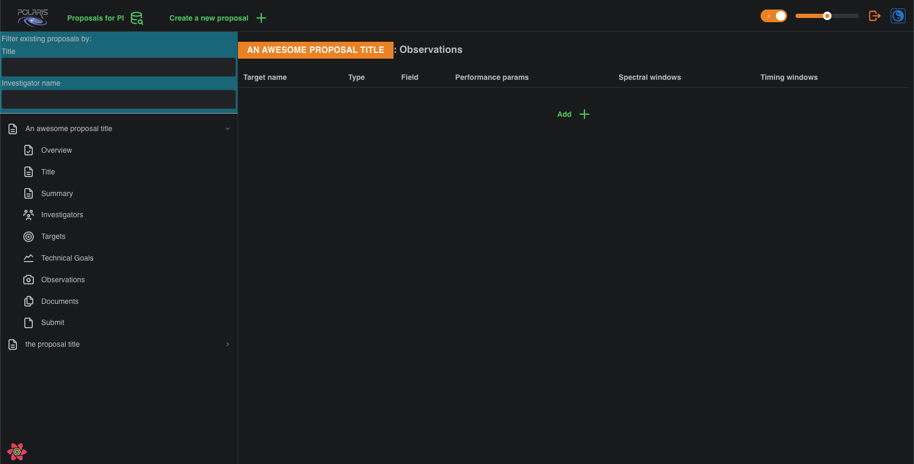
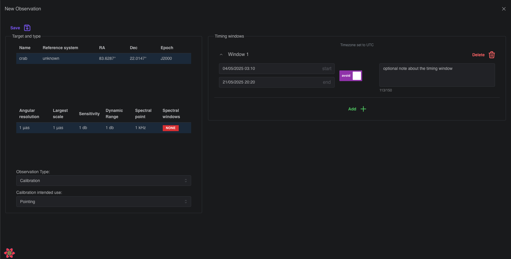
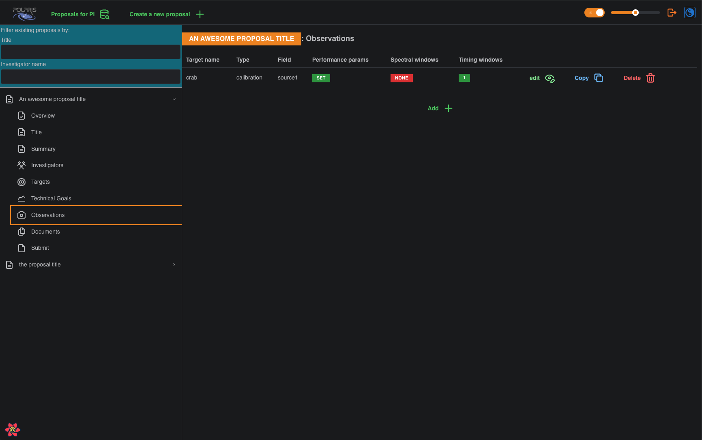

Build an Observation
After adding at least one Target and at least one Technical Goal you will see the following summary page for Observations, which will be empty.

To build an Observation click the Add + button, which will bring up the new observation form.

In this screenshot we have already selected our Target, the "crab", and our Technical Goal, and have selected the Observation Type as Calibration and the Calibration intended use as Pointing. Notice that the Observation Type is a choice between Target and Calibration, and if you select Target there is no "intended use" field; the Target is the intention of the Observation. For a Calibration Observation there are several "intended use" options to pick from; see the documentation (to-do) for details.
Selecting the Target, Technical Goal, and Observation Type is the minimum amount of information to Save an Observation to the database. However, for the Proposal to pass the server side validation before submission, all Observations in the Proposal must have at least one Timing Window.
A Timing Window is a timing constraint on the Observation, and consists of start and end times that can be specified up to the minutes unit, an avoid toggle switch that changes the meaning of the window, to be explained presently, and an optional note to provide additional information if required. Typically, a Timing Window will specify the range of times when the Observation should be performed i.e., the avoid toggle is unset. However, with the avoid toggle set the window then specifies the range of times when the Observation should not be performed.
You can add as many Timing Windows to an Observation as required by your needs. Please note that the start time must be at an earlier time than the end time, but that different Timing Windows may overlap. In this case, it is recommended to write optional notes to provide context for anyone reviewing your proposal. Notice that we assume all times are entered as UTC.
With all that information entered, click Save to save the Observation to your Proposal. This will bring you back to the Observations summary page, that will now contain your newly built Observation.

As with Technical Goals you may Edit and Copy Observations to avoid having to repeat data entry for Observations that have similar attributes. For example, using the same Target but for different types, Target or Calibration, of Observation with perhaps the same Technical Goal and/or timing constraints.
With an Observation now built both the Target and the Technical Goal to which is refers have their Delete button disabled. This prevents you from deleting either of these things while they are actively pointed to by an Observation. In order to re-enable the Delete button on Targets and Technical Goals you must first delete all Observations that refer to them.
In this alpha version of Polaris, once you have an Observation with at least one Timing Window in your Proposal it will pass server side validation checks, and you may submit it for review. In subsequent versions, you will also have to provide both Scientific and Technical Justifications to pass validation checks, and it is likely more things will be added to the validation check in the future.
To see how to submit your proposal for review please follow the guide at Submitting Proposals